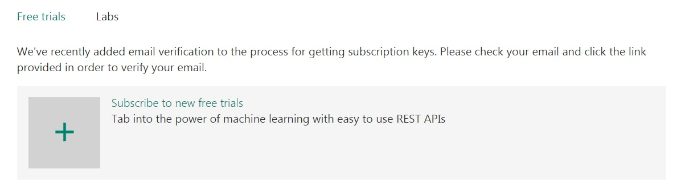
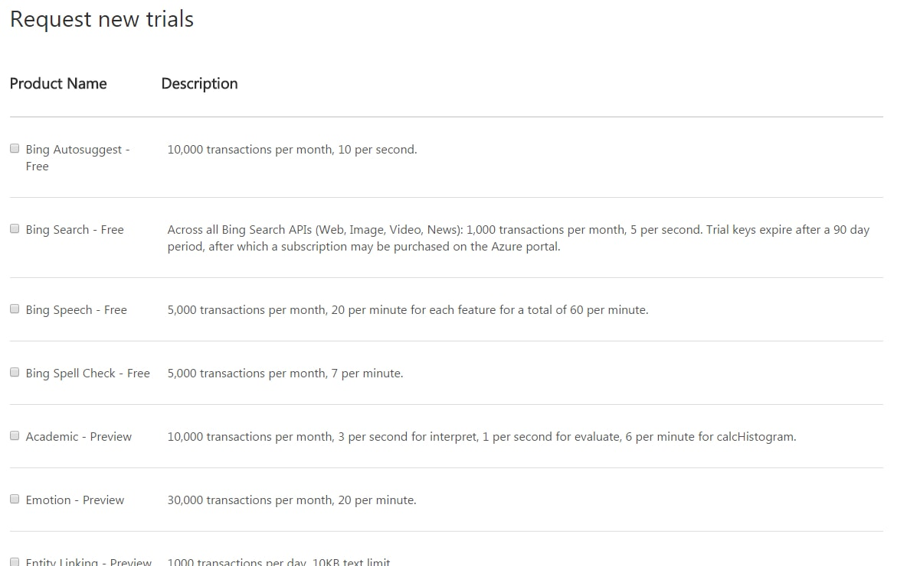
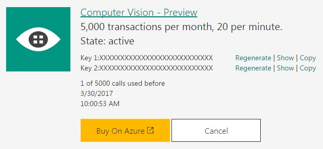

This section covers how to obtain API keys, which are necessary in order to authorize the use of APIs.
This section covers how to obtain API keys, which are necessary in order to authorize the use of APIs.
First, you need to sign up for the API keys here. You either need to sign in with a Microsoft, Github, or LinkedIn account - make one if you don't have any of them already. You may need to authorize them access to your account to get the API keys.
After that, you will see a page with the following menu:

Go ahead and verify your email, then click "Subscribe to new free trials." You will see a list of available services such as following.

Find Computer Vision API, read and agree to their terms, then click Subscribe. This will get you the API keys as shown:
As of right now (3/2/2017) they offer 5000 calls per month for free, limited at maximum 20 per minute. This is just fine for exploring the capabilities of the API, but commercial or other more serious applications may warrant purchasing the next tier plan.
That is all you need to get started with using the Computer Vision API. Copy one of your API keys and store them, as you will need it to call the API in the next section.
© Taewoo Kim. All rights reserved. | CSS based on TEMPLATED.